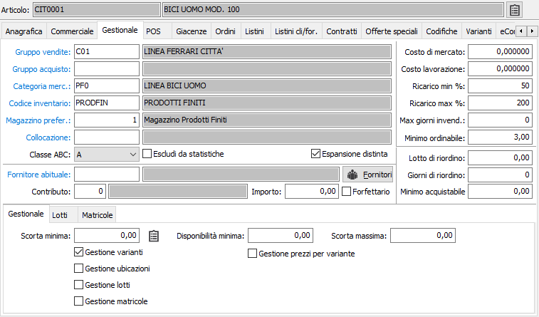
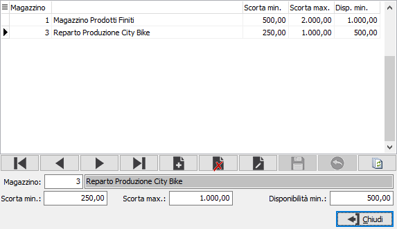
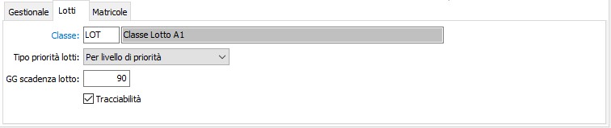
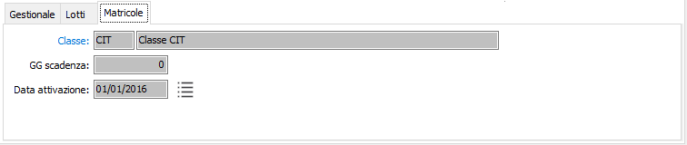
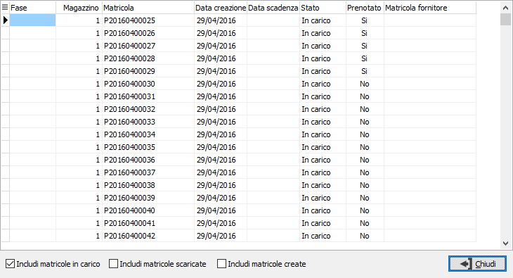

Gestionale

GRUPPO
VENDITE: codice alfanumerico di 3 caratteri presente in tabella Gruppi
statistici di vendita. Può essere inserito per selezioni di uso statistico.
Sul campo sono attive le funzioni di ricerca e manutenzione della tabella
stessa.
GRUPPO
ACQUISTI: codice alfanumerico di 3 caratteri presente in tabella Gruppi
statistici di acquisto. Può essere inserito per selezioni di uso statistico.
Sul campo sono attive le funzioni di ricerca e manutenzione della tabella
stessa.
CATEGORIA
MERCEOLOGICA: codice alfanumerico di 3 caratteri che Identifica la categoria
merceologica di appartenenza dell'articolo. Serve per le stampe selettive
degli articoli, degli inventari e delle statistiche di vendita. Il codice
deve essere presente nella tabella delle categorie merceologiche. Sul
campo sono attive le funzioni di ricerca e manutenzione della tabella
stessa.
CODICE
INVENTARIO: eventuale codice alfanumerico di 8 caratteri, presente nella
tabella Codici inventario, che identifica un gruppo di articoli omogenei
di cui l’articolo attivo fa parte, nel caso in cui si vogliano gestire
gli inventari fiscali a gruppi omogenei. Sul campo sono attive le funzioni
di ricerca e manutenzione della tabella stessa.
MAGAZZINO
PREFERENZIALE: Indica il codice magazzino preferenziale del prodotto che
viene proposto come magazzino di rigo nelle varie procedure. Sul
campo sono attive le funzioni di ricerca e manutenzione della tabella
stessa.
COLLOCAZIONE:
eventuale codice alfanumerico di 10 caratteri, presente nella tabella
Collocazione, per descrivere la collocazione fisica dell'articolo all'interno
del magazzino. Sul campo sono attive le funzioni di ricerca (F9) e manutenzione
della tabella stessa (CTRL+W).
CLASSE
ABC: combo box contenente la classe ABC cui appartiene l’articolo attivo.
Valori possibili: A; B; C;
ESCLUDI
DA STATISTICHE: definisce se il prodotto deve utilizzato per le statistiche
di magazzino (casella con segno di spunta).
ESPANSIONE
DISTINTA: definisce se deve essere espansa la distinta del componente,
nel caso in cui i prodotto sia un semilavorato inserito all'interno di
una distinta.
FORNITORE
ABITUALE: eventuale codice del fornitore abituale del prodotto,
presente nell’anagrafica fornitori. Sul campo sono attive le funzioni
di ricerca e manutenzione della tabella stessa. Il pulsante Fornitori
consente l'accesso alla finestra per la gestione dei fornitori
preferenziali.
CONTRIBUTO: Testo
stampa del contributo, collegato alla tabella TestiStampe in cui è possibile
inserire un codice collegato al testo da riportare in fattura. Nella tabella
TestiStampe è stato aggiunto il codice “50” che identifica il testo da
utilizzare per l'Ecobonus. La
descrizione del tipo stampa 50 viene utilizzata per creare il riferimento
nel file XML della fattura elettronica e non può quindi essere più lunga
di 10 caratteri.
IMPORTO: per specificare
il valore del contributo.
FORFETTARIO: casella
di spunta, per indicare se l’importo del contributo è relativo alla singola
unità di prodotto (casella vuota, l’importo sarà moltiplicato per la quantità
del rigo documento rapportata all’unità di misura primaria) o all’utilizzo
del prodotto con qualsiasi quantità (casella con segno di spunta).
COSTO
DI MERCATO: campo alfanumerico per contenere il costo di mercato del prodotto.
Può essere aggiornato dal programma Valorizzazione distinta base.
COSTO
DI LAVORAZIONE: campo alfanumerico per contenere il costo di lavorazione
del prodotto.
PERCENTUALE
RICARICO MINIMO: campo numerico per indicare la percentuale minima di
ricarico applicabile al prodotto attivo.
PERCENTUALE
RICARICO MASSIMO: campo numerico per indicare la percentuale massima di
ricarico applicabile al prodotto attivo.
MAX
GIORNI INVEND.: campo numerico per indicare il numero massimo di giorni
per cui il prodotto può rimanere invenduto.
MINIMO
ORDINABILE: Indica la quantità minima ordinabile per il prodotto; potrà
essere controllata in gestione ordini e offerte clienti in base a quanto
indicato sulla causale del documento.
LOTTO
DI RIORDINO: campo numerico per indicare la quantità del prodotto attivo
che abitualmente viene ordinata al fornitore.
GIORNI
DI RIORDINO: campo numerico per indicare il numero di giorni necessari
per l’approvvigionamento della merce.
MINIMO
ACQUISTABILE: Indica la quantità minima acquistabile per il prodotto;
potrà essere controllata in gestione ordini fornitori e richieste di offerte
in base a quanto indicato sulla causale del documento.
Nella
parte inferiore è presente una sezione Gestionale e se attivi i modulo
Lotti e Matricole saranno presenti le relative pagine; nella sezione gestionale
sono presenti i seguenti campi:
SCORTA
MINIMA: campo numerico per indicare la quantità minima necessaria di giacenza
prevista per il prodotto attivo all'interno di ogni magazzino in cui il
prodotto è movimentato. Se attivo in configurazione, è presente il pulsante
Scorte per magazzino che consente di accedere ad una finestra in cui è
possibile definire a livello di singolo magazzino la scorta minima, la
scorta massima e la disponibilità minima.
SCORTA
MASSIMA: campo numerico per indicare la quantità massima di giacenza prevista
per il prodotto attivo all'interno di ogni magazzino in cui il prodotto
è movimentato.
DISPONIBILITÀ
MINIMA: campo numerico per indicare la quantità minima di disponibilità
per il prodotto attivo all'interno di ogni magazzino in cui il prodotto
è movimentato.
GESTIONE
VARIANTI: definisce se il prodotto è gestito per varianti, casella con
segno di spunta. Il campo è visibile solo se previsto in configurazione.
GESTIONE
PREZZO PER VARIANTE: se è attiva la gestione dei prezzi per variante in
configurazione ed il prodotto gestisce la variante è possibile definire
tramite questo campo se il prezzo deve essere gestito per prodotto (casella
vuota) o per prodotto/variante (casella con segno di spunta). Se gestiti
i prezzi per variante, sul dettaglio dei documenti/movimenti sarà possibile
inserire una sola variante. Se un prodotto ha documenti ancora da evadere
antecedenti alla data di inizio gestione prezzi per variante presente
in configurazione o prezzi per variante presenti nei listini, prezzi speciali,
contratti oppure offerte speciali il campo risulterà disabilitato.
GESTIONE
UBICAZIONI: definisce se il prodotto è gestito per ubicazioni, casella
con segno di spunta. Il campo è visibile solo se previsto in configurazione.
GESTIONE
LOTTI: definisce se il prodotto è gestito a lotti, casella con segno di
spunta. Il campo è visibile solo se previsto in configurazione.
GESTIONE
MATRICOLE: definisce se il prodotto è gestito a matricole, casella con
segno di spunta. Il campo è visibile solo se previsto in configurazione.
 Nel
caso sia attiva la gestione delle scorte per magazzino sarà presente il
bottone a lato del campo scorta minima, premendo il quale compare la finestra
di assegnazione delle scorte per singolo magazzino, dove inserire il magazzino,
la scorta minima, la scorta massima e la disponibilità minima.
Nel
caso sia attiva la gestione delle scorte per magazzino sarà presente il
bottone a lato del campo scorta minima, premendo il quale compare la finestra
di assegnazione delle scorte per singolo magazzino, dove inserire il magazzino,
la scorta minima, la scorta massima e la disponibilità minima.


Se
attiva la gestione dei lotti, nella relativa pagina sono presenti i seguenti
campi:
CLASSE:
per i prodotti gestiti a lotti è possibile specificare la classe
lotto,che consente un specifica numerazione progressiva; se il campo
viene lasciato vuoto ed è gestito in configurazione il progressivo del
lotto per la creazione saranno utilizzati i parametri di configurazione.
TIPO
PRIORITÀ LOTTI: se l'articolo è gestito a lotti, determina l'ordine di
visualizzazione degli stessi in evasione.
GG
SCADENZA LOTTO: se l'articolo è gestito a lotti, determina i giorni di
validità dei lotti; il valore viene utilizzato in fase di inserimento
del lotto per la determinazione automatica della data di scadenza.
Tracciabilità: Indica che
il prodotto deve essere tracciato (casella con segno di spunta); utilizzato
nella stampa delle etichette barcode da documenti, per i componenti dei
prodotti che hanno carichi da produzione, se il componente è tracciabile
è possibile stampare i dati relativi alla movimentazione.

Se attiva da configurazione la "Gestione matricole" sarà presente
la linguetta che contiene i dati relativi alle matricole del prodotto;
per i prodotti gestiti a matricole è obbligatorio specificare la classe
matricola, i giorni di scadenza sono facoltativi. L’attivazione delle
matricole su un prodotto dall’anagrafica è possibile solo per i prodotti
non movimentati, altrimenti è necessario utilizzare l’apposita procedura
di servizio. Al momento dell’attivazione viene assegnata in automatico
la data di attivazione, nei documenti eventualmente presenti ed antecedenti
a questa data non sarà possibile effettuare modifiche o cancellare righe
relative al prodotto. per i prodotti gestiti a matricole è presente anche
il pulsante di analisi che mostra le matricole assegnate al prodotto.

La finestra riporta le matricole assegnate al prodotto e che risultano
in carico su di un magazzino; utilizzando le caselle di spunta in basso
è possibile mostrare anche le matricole scaricate (mostrate in rosso)
e le eventuali matricole create e non ancora movimentate (mostrate in
grigio). Il doppio clic del mouse sul rigo consente l'accesso alla manutenzione della matricola.